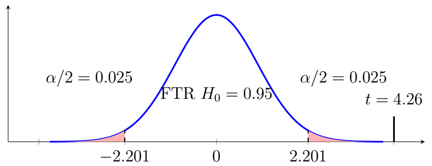

Chapter 10: Advanced Hypothesis Testing
Section 10.2: Testing Matched Pairs
Suppose we want to compare two population means, \(\mu_1\) and \(\mu_2\). The appropriate procedure depends on whether the two samples are matched or unmatched.
The Matched-Pairs Design
Definition: Matched Pairs
A matched-pairs design is used when each observation in one sample is naturally paired with an observation in the other sample.
Examples include:
- measurements taken from the same person before and after a treatment;
- the same subjects receiving two different treatments;
- measurements on the same student before and after an intervention.
Matched pairs occur when observations are naturally paired so that each observation in one condition corresponds to a specific observation in the other condition. A before-and-after study is one common example.
Instead of analyzing two separate samples, we analyze the difference within each pair of samples.
Differences Within Pairs
For each pair \(i\), we define \(d_i=x_{1i}-x_{2i}\).
Rather than analyzing the two measurements separately, we analyze the differences within the pairs. This converts the matched-pairs problem into a one-sample problem involving the population mean difference \(\mu_d\).
The sample mean difference is
\[\bar{d}=\frac{\sum_{i=1}^{n}d_i}{n}.\]The sample standard deviation of the differences is
\[s_d=\sqrt{\frac{\sum_{i=1}^{n}(d_i-\bar{d})^2}{n-1}}.\]Confidence Interval for a Matched-Pairs Mean Difference
Confidence Interval for a Matched-Pairs Mean Difference
Because the differences are treated as a single sample, a Student's \(t\)-interval is used.
A \(100(1-\alpha)\%\) confidence interval for \(\mu_d\) is
\[\bar{d}\pm t_{\alpha/2,n-1}\frac{s_d}{\sqrt{n}}\]where \(df=n-1\).
A matched-pairs confidence interval is a one-sample \(t\) confidence interval applied to the differences.
Example 1
A researcher measures the blood pressure of \(12\) patients before and after a treatment. Define the difference as
\[d=\text{Before}-\text{After}.\]The sample results are
\[n=12,\qquad \bar{d}=6.4,\qquad s_d=5.2.\]Determine the confidence interval for the difference in blood pressure at \(\alpha=0.05\).
Solution
Since \(c=95\%=0.95\), \(\alpha=0.05\) and \(\alpha/2=0.025\). With \(n=12\), \(df=11\). From the Student's \(t\) table, \(t_{0.025,11}=2.201\). The margin of error is
\[E=t_{\alpha/2,n-1}\left(\frac{s_d}{\sqrt{n}}\right)=2.201\left(\frac{5.2}{\sqrt{12}}\right)\approx3.30.\]Therefore, the confidence interval is \(6.4\pm3.3\), or \((3.1,\;9.7)\). More formally, 95% of all similarly constructed confidence intervals will contain the true but unknown difference of means.
Hypothesis Test for a Matched-Pairs Mean Difference
Hypotheses and Test Statistic
The hypotheses can take any of the following forms:
\[H_0:\mu_d= d_0\text{ versus }H_1:\mu_d\neq d_0,\]or
\[H_0:\mu_d\leq d_0\text{ versus }H_1:\mu_d>d_0,\]or
\[H_0:\mu_d\geq d_0\text{ versus }H_1:\mu_d<d_0.\]The most common null hypothesis is
\[H_0:\mu_d= d_0\text{ versus }H_1:\mu_d\neq d_0,\]which represents no average difference between the two conditions when \(d_0=0\). Although single-tailed tests still have their place, we must look closely at each scenario.
The test statistic is
\[t=\frac{\bar{d}-d_0}{s_d/\sqrt{n}}\]with \(df=n-1\).
Example 2
A researcher measures the blood pressure of \(12\) patients before and after a treatment. Define the difference as
\[d=\text{Before}-\text{After}.\]The sample results are
\[n=12,\qquad \bar{d}=6.4,\qquad s_d=5.2.\]Test whether the treatment produces a change in blood pressure at \(\alpha=0.05\).
Solution
- Claim – Blood pressure is unchanged by treatment.
- Complement of the claim – Blood pressure is changed by treatment.
- Hypotheses – \(H_0:\mu_d=0\), \(H_1:\mu_d\neq0\).
- Significance level – \(\alpha=0.05\).
- Select the test statistic – Since \(\sigma\) is unknown, \(t\).
- Compute the test statistic. \[t=\frac{\bar{d}-\mu_{d,0}}{s_d/\sqrt{n}}=\frac{6.4-0}{5.2/\sqrt{12}}\approx4.26.\]
- Determine the critical values – For a two-tailed test with \(df=n-1=11\), \(t_c=\pm2.201\).

Two-tailed test: the test statistic t = 4.26 falls in the right rejection region. - Decision – Since \(4.26>2.201\), we reject \(H_0\); there is sufficient evidence to support the alternative hypothesis. We can see this graphically as \(t\) falls in the critical region.
- Conclusion – There is sufficient evidence to conclude that the mean blood pressure difference between before and after treatment is not zero.
If we use the \(p\)-value method we find \(0.001<p<0.01\), well below \(\alpha=0.05\), resulting in the same strong conclusion.